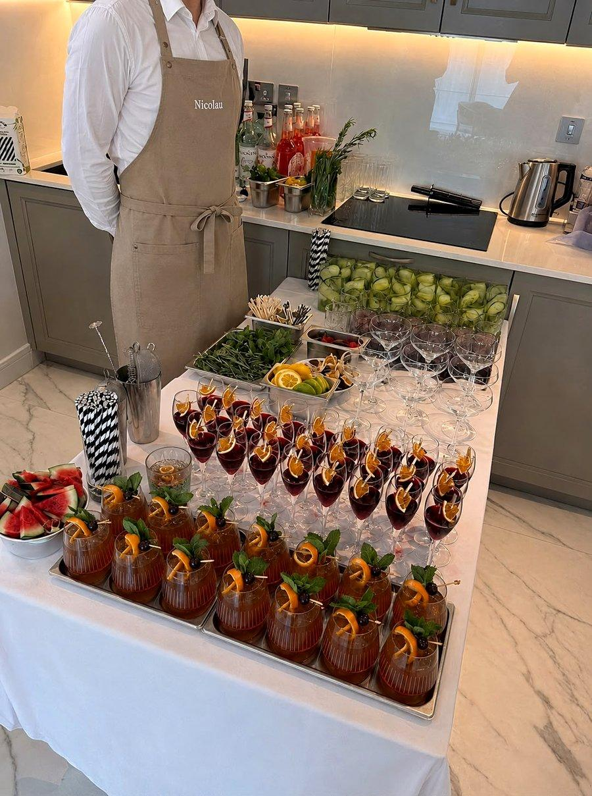

Private Chef London Events
Alejandro Nicolau is a London private chef for events: private households, corporate events and gala dinners across the city, with his own team and the logistics to travel further when your event calls for it.
We Cook for Big Events and Dinners
Private chef events in London, from intimate dinners and family celebrations to corporate receptions and gala dinners, with full cocktail and bar service, delivered by a team built to handle real scale. Available across the UK, with international travel by arrangement.




Daily service, no exceptions
As a resident chef for households across London, Alejandro designs daily menus tailored to dietary requirements, entertains visiting guests, and maintains the highest standard of discretion.
Experience includes managing kosher-style cooking for a British Jewish family, with particular care for tradition and consistency.
Check availability
One-off events, planned end to end
From intimate dinner parties to full corporate receptions, Alejandro and his team handle every detail: menu, service staff, and logistics, so the event runs exactly as planned.
Receptions, business lunches and company dinners are delivered with the same standard as a Michelin-starred restaurant, without leaving the office or venue.
Check availability
High-society receptions
Luxury-hotel-level table settings, multi-course menus and full service coordination for private clients and high-profile receptions.
Every gala dinner is planned down to the last detail: tableware, pace of service, pairing, and the visual presentation of each dish.
Check availability
His cooking, anywhere in the world
Based in London, Alejandro travels internationally with his own team and protocol, adapting purchasing and kitchen logistics to the particularities of each destination.
Ideal for destination weddings, family celebrations at a second home, or multi-day events.
Check availabilityBooking a yacht instead?
Yacht and superyacht charters are handled separately, with itinerary-led menus and crew coordination. See the dedicated yacht chef page for that service. This page covers private chef events on land in London and the UK.
A bar built around your evening
We can provide our own bar setup, personalised for your experience, from a welcome cocktail to a full evening's drinks service, run by our own bartenders.
We can also personalise and dress your table with our own equipment, so the whole event, food, drinks and table, feels considered from start to finish.
Check availabilityOther service formats
Tasting Menus
Intimate five- to nine-course experiences, designed for special celebrations, anniversaries or signature dinners at home.
Private Cooking Classes
Hands-on sessions for small groups, families or teams, with a final tasting included.
From enquiry to the table
Enquiry
Tell us the occasion, location, guest count and preferences.
Menu proposal
Alejandro designs a bespoke menu, with options and pricing.
Confirmation
Date, sourcing logistics and required team are confirmed.
The event
Flawless, discreet service worthy of the setting.
Private chef London events: FAQs
Alejandro Nicolau, a London private chef, cooks for private household dinners, dinner parties, family celebrations, corporate receptions and business lunches, gala dinners, weddings and international events. Each event is planned end to end, covering the menu, service staff and logistics.
Alejandro Nicolau's private chef events range from intimate dinners for two to receptions for several dozen guests and more, with his team scaled to the event. Share your guest count in the enquiry form so the right team and format can be proposed.
Yes. For private chef events in London, Alejandro Nicolau's team brings the specialist kitchen equipment, service staff and, on request, bar setup and table dressing, so a standard kitchen or venue is all the host needs to provide.
Send the date, location, guest count and preferences through the enquiry form on the contact page. Alejandro Nicolau replies within 24 hours with a tailored menu proposal, and the date, sourcing and team are confirmed once you approve it.